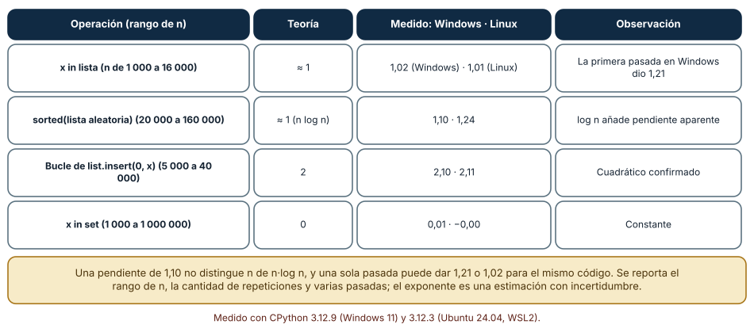
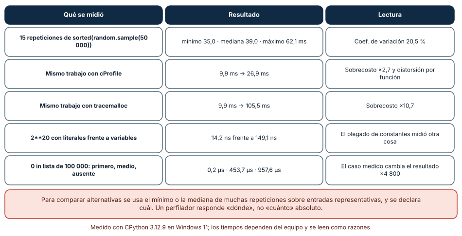
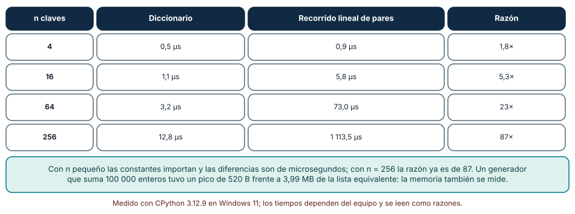

← SE-093 — Índices, probabilísticas y estructuras persistentes · ↑ Parte 07 · 📚 Índice completo · 🌐 Portal · SE-095 — Taller: elegir por carga y no por costumbre →
Punto profesional y fundamento pedagógico
Punto profesional. La clase existe para confrontar el modelo de complejidad con mediciones reproducibles y perfiles.
Por qué aparece aquí. Se sitúa después de Índices, probabilísticas y estructuras persistentes y antes de Taller: elegir por carga y no por costumbre: convierte el conocimiento anterior en una decisión observable que la clase siguiente podrá reutilizar. La continuidad se comprueba en el artefacto, no por compartir vocabulario.
Error conceptual que debe corregir. Optimizar la función más lenta de una muestra sin evaluar representatividad.
Secuencia de aprendizaje. Antes de leer la solución, el estudiante predice el resultado del caso normal y del error conceptual anterior. Luego explica un caso resuelto paso a paso, construye un contraejemplo que cambie la decisión y, sin consultar el texto, reconstruye el mecanismo y lo aplica a una entrada nueva. La secuencia usa predicción, explicación propia, contraste y recuperación. ICAP distingue participación de construcción de conocimiento; How People Learn II exige conectar conocimiento previo, contexto y transferencia; la práctica de recuperación respalda producir de nuevo la explicación tras una demora; y Education for Life and Work exige devolución que explique la causa del error.
Evidencia de aprendizaje. Benchmark-report.md con warm-up, muestras, perfil, hipótesis y regresión. Debe contener predicción previa, observación, explicación causal, contraejemplo, criterio de aceptación y una nota de qué dato haría cambiar la conclusión.
Límite de la conclusión. El profiler altera la ejecución y una máquina no representa todas.
Trazabilidad fuente → afirmación
| Fuente primaria u oficial | Afirmación que respalda | Lo que no prueba |
|---|---|---|
| Python Debugging and Profiling | Timeit, cprofile y tracemalloc con sus límites; autoridad: Python Software Foundation | No demuestra por sí sola que el artefacto del estudiante sea correcto. |
| MIT 6.006 Introduction to Algorithms | Estructuras, algoritmos, corrección y análisis de complejidad; autoridad: MIT OpenCourseWare | No demuestra por sí sola que el artefacto del estudiante sea correcto. |
| SWEBOK Guide v4.0a | Construcción, medición y fundamentos de ingeniería; autoridad: IEEE Computer Society | No demuestra por sí sola que el artefacto del estudiante sea correcto. |
Antes de empezar
Esta clase continúa la biblioteca de estructuras y algoritmos de la Parte 07. Recupera la evidencia de la clase anterior, añade una decisión propia de Complejidad empírica, benchmarks y perfiles y deja un artefacto que la clase siguiente deberá consumir. La pregunta activa es: ¿Cómo medir costo sin convertir ruido, calentamiento o una carga irreal en conclusión?
Prerrequisitos
- Haber completado la clase anterior o reconstruir su contrato y evidencia.
- Python 3.11 o posterior, terminal, editor y Git; un segundo runtime es opcional y debe declararse.
- Trabajar con fixtures sintéticos: ninguna observación necesita datos de una persona o sistema real.
Problema auténtico
Dos implementaciones de la biblioteca de estructuras y algoritmos difieren pocos milisegundos en una ejecución. El equipo quiere elegir la más rápida, pero cada prueba incluye generación de datos, logging y distinto orden de calentamiento.
Objetivos observables
Al terminar podrás explicar los cinco mecanismos de esta clase, predecir su comportamiento antes de ejecutar, construir un caso normal y uno límite, diagnosticar el fallo controlado, comparar una alternativa y entregar evidencia que otra persona pueda reproducir.
Mapa conceptual
Ver la notación fuente del diagrama
flowchart LR
N1[Modelo de costo / pregunta] --> N2[Reloj, repetición / distribución] --> N3[Warm-up, caché / aislamiento] --> N4[Perfil / atribución] --> N5[Comparabilidad / reporte]
N5 -->|fallo o cambio| N1El mapa se lee como una cadena de razonamiento, no como fases obligatorias del runtime. La flecha de retorno indica que un fallo o cambio de requisito obliga a revisar el modelo inicial; no autoriza a parchear solo la última salida.
Temas y por qué importan
| Tema | Por qué cambia una decisión profesional | Evidencia mínima |
|---|---|---|
| Modelo de costo y pregunta | Antes de medir se formula qué operación, tamaño, distribución y recurso importan. | Predicción, traza causal y contraejemplo de Modelo de costo y pregunta en benchmark-report.md |
| Reloj, repetición y distribución | Se usa reloj monotónico, múltiples repeticiones y estadísticos robustos. | Predicción, traza causal y contraejemplo de Reloj, repetición y distribución en benchmark-report.md |
| Warm-up, caché y aislamiento | Importación, JIT, page cache y asignadores cambian primeras corridas. | Predicción, traza causal y contraejemplo de Warm-up, caché y aislamiento en benchmark-report.md |
| Perfil y atribución | Un profiler atribuye tiempo o asignaciones a funciones y líneas según su método. | Predicción, traza causal y contraejemplo de Perfil y atribución en benchmark-report.md |
| Comparabilidad y reporte | Misma entrada, versión, afinidad razonable y estado del sistema hacen resultados comparables. | Predicción, traza causal y contraejemplo de Comparabilidad y reporte en benchmark-report.md |
Conceptos y decisiones
1. Modelo de costo y pregunta
Antes de medir se formula qué operación, tamaño, distribución y recurso importan. Big-O acota crecimiento; benchmark estima comportamiento en un entorno. Uno no sustituye al otro y ambos pueden ser irrelevantes si la carga está mal modelada.
2. Reloj, repetición y distribución
Se usa reloj monotónico, múltiples repeticiones y estadísticos robustos. El mínimo puede aproximar menor interferencia; mediana describe centro; percentiles muestran cola. Promedio sin distribución oculta pausas y outliers.
3. Warm-up, caché y aislamiento
Importación, JIT, page cache y asignadores cambian primeras corridas. Aleatorizar orden reduce sesgo, pero caches también son parte de algunas cargas reales. El protocolo declara qué se calienta y qué se reinicia.
4. Perfil y atribución
Un profiler atribuye tiempo o asignaciones a funciones y líneas según su método. Instrumentar altera ejecución; muestrear pierde eventos cortos. Se usa para generar hipótesis, luego un experimento enfocado confirma el cambio.
5. Comparabilidad y reporte
Misma entrada, versión, afinidad razonable y estado del sistema hacen resultados comparables. Velocidad sin memoria, corrección y mantenibilidad no decide. El informe conserva datos crudos, comando y límites, no solo una gráfica atractiva.
Estimar el exponente en lugar de adivinarlo
Una medición aislada no distingue n de n²; una serie con tamaños crecientes sí. Medimos el mínimo de varias repeticiones para cinco tamaños y ajustamos una recta en escala log-log: su pendiente estima el exponente. x in lista (n de 1 000 a 16 000): 1,02 en Windows y 1,01 en Linux (teoría 1); sorted (20 000 a 160 000): 1,10 y 1,24 (teoría ≈ 1, con el factor log n); un bucle de insert(0, x) (5 000 a 40 000): 2,10 y 2,11 (teoría 2); x in set (1 000 a 1 000 000): 0,01 y 0,00 (teoría 0). Una primera pasada en Windows había dado 1,21 para x in lista: el punto de 16 000 elementos subió a 319 µs frente a 186 µs de la segunda pasada. La misma medición, dos veces, dos pendientes.
Eso obliga a un protocolo: varias pasadas, mínimo o mediana declarada, rango de n explícito y una frase sobre incertidumbre. Una pendiente de 1,10 no distingue n de n log n, y el ajuste solo describe el rango medido.

Cómo leer la figura. Compara la tercera columna con la segunda: el exponente medido se acerca a la teoría pero no la iguala. Dónde deja de valer: una pendiente mide solo el rango probado; la caché, el recolector de basura y el cambio de política del asignador pueden doblar la curva fuera de él. No sustituye al análisis del algoritmo.
Lo que contamina una medición
Repetimos 15 veces sorted(random.sample(range(50000), 50000)): el mínimo fue 35,0 ms, la mediana 39,0 y el máximo 62,1, con un coeficiente de variación del 20,5 % (22,0 % en Linux), incluyendo el muestreo aleatorio. Medir el mismo trabajo bajo cProfile lo pasó de 9,9 ms a 26,9 ms (×2,7) y bajo tracemalloc de 9,9 a 105,5 ms (×10,7): ambos distorsionan lo que miden y responden «dónde» y «cuánta memoria», no «cuánto tarda». timeit de 2**20 con literales tardó 14,2 ns por evaluación y 149,1 ns con variables: el compilador plegó la constante, y se midió otra cosa. Buscar el primero, el elemento medio o un elemento ausente en una lista de 100 000 dio 0,2 µs, 453,7 µs y 957,6 µs, un factor de ≈ 4 800 por elegir el caso.
El recolector de basura, en cambio, no afectó: crear 300 000 listas pequeñas tardó 55,6 ms con el recolector activo y 55,2 ms sin él. No todo lo que se sospecha pesa; también esa conclusión se mide.

Cómo leer la figura. La columna central es la medición, la derecha su consecuencia. Dos de las cinco filas cambian el resultado en órdenes de magnitud. Dónde deja de valer: los coeficientes de variación y los sobrecostos son de este equipo con otras aplicaciones abiertas; en un servidor aislado serán otros. Se muestra el tipo de distorsión, no un valor universal.
Constantes: dónde la asintótica deja de decidir
La búsqueda de todas las claves en un diccionario frente a un recorrido lineal de pares dio, para 4, 16, 64 y 256 claves: 0,5/0,9 µs, 1,1/5,8 µs, 3,2/73,0 µs y 12,8/1 113,5 µs. Con 4 claves la diferencia es de 1,8 veces y en términos absolutos irrelevante; con 256 es de 87 veces. La complejidad asintótica ordena los algoritmos para n grande, pero la decisión práctica depende del n real y de las constantes. Por eso la pregunta no es «¿cuál es O(1)?», sino «¿cuál es el tamaño típico y el peor?».
La memoria se mide igual. Con tracemalloc, sumar 100 000 enteros con un generador tuvo un pico de 520 bytes; una lista por comprensión equivalente, 3,99 MB. Con el mismo resultado, la estructura intermedia fue 7 700 veces mayor.

Cómo leer la figura. Mira la última columna: la razón crece con n, y con n pequeño la elección casi no importa. Dónde deja de valer: el cruce depende del lenguaje y de la implementación; en C o con otro diseño de datos se desplazaría. Se midió una búsqueda de todas las claves, no una operación aislada.
Definiciones de trabajo
- modelo de costo y pregunta: antes de medir se formula qué operación, tamaño, distribución y recurso importan.
- reloj, repetición y distribución: se usa reloj monotónico, múltiples repeticiones y estadísticos robustos.
- warm-up, caché y aislamiento: importación, jit, page cache y asignadores cambian primeras corridas.
- perfil y atribución: un profiler atribuye tiempo o asignaciones a funciones y líneas según su método.
- comparabilidad y reporte: misma entrada, versión, afinidad razonable y estado del sistema hacen resultados comparables.
Las definiciones son operativas para la biblioteca de estructuras y algoritmos. No convierten términos con historia más amplia en sinónimos y deben contrastarse con la documentación primaria enlazada al final.
Ejemplo mínimo
python -m timeit -s "from algorithm import build_fixture, choose" "choose(build_fixture(1000))"
python -m cProfile -o evidence/algorithm_library.prof -m unittest tests.test_workloadAntes de ejecutar, predice estado, resultado y error. Después registra versión, comando y salida. Si el fragmento es pseudocódigo o pertenece a otro lenguaje, etiquétalo como tal y no afirmes que fue ejecutado.
Ejemplo profesional
En la biblioteca de estructuras y algoritmos, un caso conserva identidad, prioridad, dependencias, instante de llegada y estado de resolución. La implementación de esta clase debe conservar ese contrato aunque cambie la forma interna. El caso profesional no pregunta únicamente si produce una salida: pregunta quién puede producirla, qué estado observa, cómo falla y qué rastro permite disputar una decisión incorrecta.
Compara el caso normal con autorización falsa, evidencia incompleta, empate y repetición. Un mecanismo es apropiado cuando esas diferencias quedan visibles y localizadas; es peligroso cuando dependen de orden accidental, estado oculto o una convención que el consumidor no puede conocer.
Práctica guiada
- Copia el contrato de entrada y salida antes de escribir implementación.
- Predice el caso normal y un límite; identifica la invariante que no puede romperse.
- Implementa la versión mínima sin I/O dentro del núcleo.
- Ejecuta el caso y conserva comando, versión y salida bajo
evidence/. - Introduce el fallo controlado, reduce la reproducción y formula dos hipótesis rivales.
- Corrige la causa, añade regresión y ejecuta el conjunto completo.
- Compara con otro paradigma o lenguaje indicando qué semántica se preserva.
Ejercicios
- Pendiente: mide
x in listapara cinco tamaños, ajusta la recta log-log y compara con 1; repite la pasada y reporta la diferencia. - Ruido: repite 15 veces una operación y calcula mínimo, mediana, máximo y coeficiente de variación.
- Trampa: diseña una medición que parezca correcta y mida otra cosa (por ejemplo, con una constante plegada) y explica cómo la detectarías.
- Cruce: busca el tamaño a partir del cual el diccionario supera por un factor de 10 a un recorrido lineal en tu máquina.
Reto verificable
Entrega implementación, fixtures, pruebas y un informe corto. Se aprueba si otra persona ejecuta desde checkout limpio, obtiene los mismos resultados y puede relacionar cada rama o transformación con una regla del dominio. No se aprueba por cantidad de archivos ni por usar la sintaxis característica del paradigma.
Caso conductor
La biblioteca de estructuras y algoritmos recibe casos del motor de reglas comparado, mantiene una frontera de trabajo priorizada y explica por qué el siguiente caso es elegible. Ejecuta una carga pequeña trazable, duplicados, prioridades iguales y una dependencia ausente. Cambia después una sola regla o condición y revisa qué archivos, pruebas y trazas debieron modificarse. Esa superficie de cambio alimenta el proyecto final de la parte.
Preguntas frecuentes
¿Cuántas repeticiones necesito?
Las suficientes para que el mínimo y la mediana se estabilicen: con 15 repeticiones el coeficiente de variación fue 20,5 %. Reporta cuántas y qué estadístico usas.
¿cProfile sirve para medir el tiempo?
Para saber dónde se va el tiempo, sí; para saber cuánto, no: añadió un factor de 2,7. Para duración usa timeit sin perfilador.
¿Por qué mi gráfica log-log no da una recta?
Porque el rango incluye un cambio de régimen (caché, asignador) o el ruido domina. Una pasada dio 1,21 y otra 1,02 para la misma operación.
¿La complejidad asintótica basta para decidir?
No cuando n es pequeño: con 4 claves la diferencia fue de 1,8 veces (irrelevante) y con 256 de 87 veces. Se decide con el n real.
Fallo controlado y diagnóstico
Incluye build_fixture solo en una variante. Separa preparación, alterna orden y verifica resultados antes de cronometrar; un algoritmo incorrecto rápido no participa.
Registra síntoma, entrada mínima, hipótesis, observación que descarta cada hipótesis, causa, corrección y prueba de regresión. No cambies simultáneamente implementación, fixture y expectativa.
Mide 220 con timeit usando literales y luego con variables definidas en setup. Síntoma: 14,2 ns frente a 149,1 ns. Hipótesis rivales: (a) las variables hacen la operación más cara; (b) el compilador pliega la expresión con literales y no la ejecuta. Prueba: mira el bytecode con dis y observa que la constante ya está calculada. Conclusión:** se midió el costo de cargar una constante, no el de elevar. Conserva en el informe la forma de la medición, no solo el número.
Errores comunes y cómo corregirlos
| Síntoma | Causa probable | Corrección |
|---|---|---|
| Dos ejecuciones dan conclusiones opuestas | Una sola pasada sin estimar el ruido | Repetir, usar mínimo o mediana y reportar la dispersión |
| La operación «constante» resulta gratis | Plegado de constantes o código muerto | Usar variables o datos opacos y verificar con una operación conocida |
| El perfil indica una función que en producción no pesa | El perfilador distorsiona la proporción | Contrastar con timeit o una medición de pared sin perfilador |
| Promedio bueno y cola mala | Se reportó solo la media | Registrar percentiles y el caso peor |
| La comparación cambia con otra máquina | Tiempos absolutos, no razones | Reportar razones, rango de n y plataforma |
Entorno y archivos clave
work/SE-094/
├── README.md
├── algorithm_library/
│ ├── domain.py
│ └── se_094.py
├── fixtures/cases.json
├── tests/test_se_094.py
└── evidence/diagnosis.mdEl README declara plataforma, runtimes, comandos, limpieza y límites. Evita dependencias externas cuando la biblioteca estándar permita observar el mecanismo; si agregas una, fija procedencia y versión.
Seguridad, ética y accesibilidad
- la autorización forma parte del dominio y no se infiere por ausencia de rechazo;
- no uses
eval, reglas descargadas ni serialización insegura; - limita colas, recursión, tamaño de entrada y tiempo de evaluación;
- redacta trazas y conserva una explicación textual además de color o animación;
- una recomendación automatizada debe poder revisarse, impugnarse y corregirse;
- respeta licencias de ejemplos y atribuye adaptaciones.
Puente hacia el trabajo con agentes
Un agente que informa «mejoré el rendimiento un 40 %» merece tres preguntas: ¿cuántas repeticiones, qué estadístico y en qué máquina? Dale un script de medición fijo que fije semilla, repeticiones y tamaños, y obliga a reportar razones con dispersión. Sin eso, un agente puede perfilar con cProfile, comparar tiempos con distorsión y concluir con aparente rigor algo que una segunda ejecución desmiente.
Transferencia
Traslada un fixture al segundo modelo o lenguaje. Compara representación de ausencia, error, mutabilidad, orden y cancelación. La transferencia está lograda cuando el contrato se conserva y las diferencias están explicadas, no cuando la sintaxis se parece.
Evaluación y evidencia
| Criterio | Evidencia para aprobar |
|---|---|
| comprensión | explicación causal de los cinco mecanismos |
| corrección | normal, límite, inválido y contraejemplo |
| diseño | estado, efectos y contrato localizables |
| diagnóstico | reproducción mínima y regresión |
| transferencia | comparación semántica, no estética |
| reproducibilidad | versiones, comandos, salida y límites |
Fuentes
- MIT 6.006 Introduction to Algorithms — Estructuras, algoritmos, corrección y análisis de complejidad; autoridad: MIT OpenCourseWare.
- Python Data Model — Semántica de secuencias, conjuntos, mappings, igualdad y hash; autoridad: Python Software Foundation.
- Python Standard Library — Deque, heapq, bisect, graphlib y contenedores disponibles; autoridad: Python Software Foundation.
- Python Debugging and Profiling — Timeit, cprofile y tracemalloc con sus límites; autoridad: Python Software Foundation.
- Mathematics for Computer Science — Inducción, grafos, conteo y razonamiento discreto; autoridad: MIT OpenCourseWare.
- SWEBOK Guide v4.0a — Construcción, medición y fundamentos de ingeniería; autoridad: IEEE Computer Society.
Cada fuente respalda el mecanismo indicado; ninguna demuestra que la implementación de la biblioteca de estructuras y algoritmos sea correcta. Esa afirmación depende de fixtures, pruebas, trazas y revisión reproducible.
- Python:
timeit— medición de fragmentos pequeños y advertencias sobre el recolector. - Python: perfiladores
cProfileyprofile— perfil determinista y su sobrecosto. - Python:
tracemalloc— medición de memoria y sobrecosto. - Mytkowicz et al., «Producing wrong data without doing anything obviously wrong!» (ASPLOS 2009) — sesgos de medición debidos al entorno y al orden de enlace.
Límites y siguiente paso
La medición local no demuestra latencia productiva ni causalidad por sí sola. El taller siguiente usa una matriz de cargas y fuerza decisiones distintas.
Glosario
- modelo de costo y pregunta: antes de medir se formula qué operación, tamaño, distribución y recurso importan.
- reloj, repetición y distribución: se usa reloj monotónico, múltiples repeticiones y estadísticos robustos.
- warm-up, caché y aislamiento: importación, jit, page cache y asignadores cambian primeras corridas.
- perfil y atribución: un profiler atribuye tiempo o asignaciones a funciones y líneas según su método.
- comparabilidad y reporte: misma entrada, versión, afinidad razonable y estado del sistema hacen resultados comparables.
← SE-093 — Índices, probabilísticas y estructuras persistentes · ↑ Parte 07 · 📚 Índice completo · 🌐 Portal · SE-095 — Taller: elegir por carga y no por costumbre →